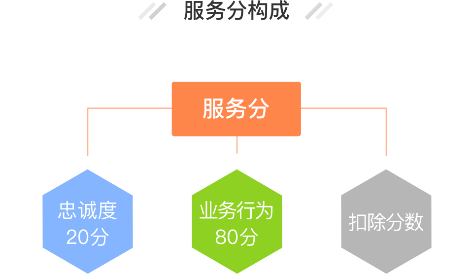

服务分（总分100分）是根据您最近90天使用易货嘀司机接单情况来决定的，每天零点动态更新一次。服务分涉及司机的等级特权，分数随司机的服务好坏而变化，直接影响您的金豆加速和其他奖励。
忠诚度20分：主要通过三证认证、车贴喷漆、保证金等行为获取。
业务行为80分：主要通过接单量、运价、服务货主数、评价、签到、指派率、单据上传情况、31131时效等行为获取。
扣除服务分的情况：当出现投诉订单、作弊订单时都将扣除相应服务分。
铂金司机超越90%的司机
相应权益：享受金豆奖励2倍加速。
黄金司机超越60%的司机
相应权益：享受金豆奖励1.5倍加速。
白银司机超越30%的司机
相应权益：享受金豆奖励1.2倍加速。
普通司机排名30%以下的司机
相应权益：享受金豆奖励1倍加速。